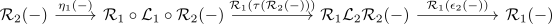
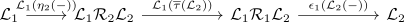
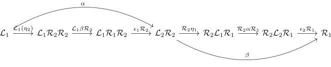
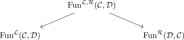
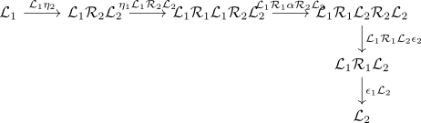

equivalence of subcategories of left and right adjoints
Proposition
Let $\mathcal{C}, \mathcal{D}$ be categories, $\mathrm{Fun}^{\mathcal{L}}(\mathcal{C}, \mathcal{D}), $\mathrm{Fun}^{\mathcal{R}}(\mathcal{D}, \mathcal{C})$ the full subcategories containing left and right adjoints together with the unit resp. counit Then there exists an equivalence
where
and the

(right ?)
see:
Proof
using adjoint equivalence of categories and fully faithful and essentially surjective functor it suffices to
essentially surjective
follows from uniqueness of a left adjoint / uniqueness of a right adjoint
fully faithful
Note that the inverse is given by

Then
alternative
Let
be the category containing
- adjoint functors $\mathcal{L} \dashv \mathcal{R}$ as objects
- natural transformations $\alpha: \mathcal{L}_1 \rightarrow \mathcal{L}_2, \beta: \mathcal{R}_2 \rightarrow \mathcal{R}_1$ such that

commute _ Note that there exists evident forgetful functors

These forgetful functors are by definition essentially surjective
We show that they are also fully faithful

TODO